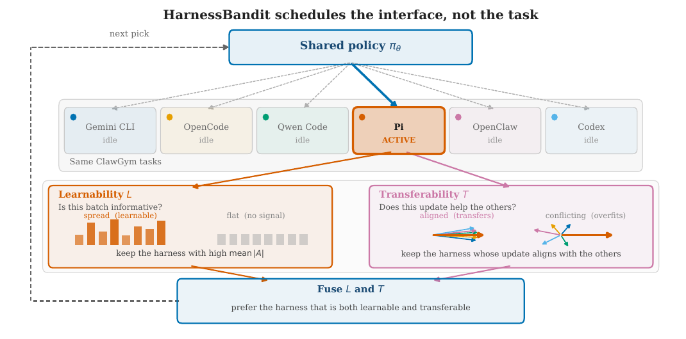
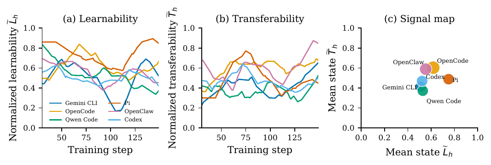
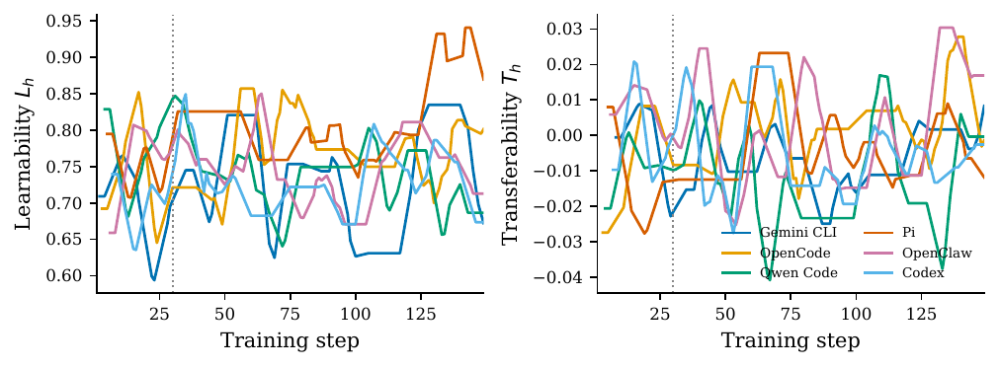
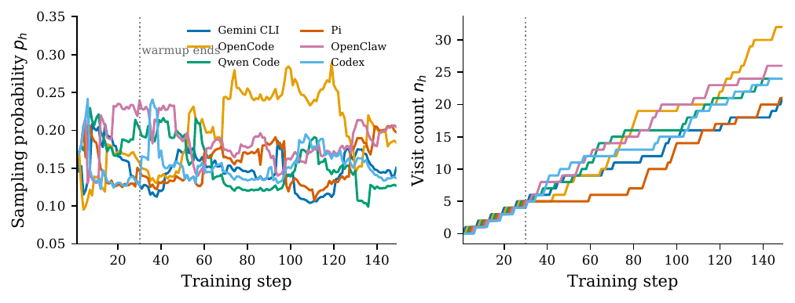
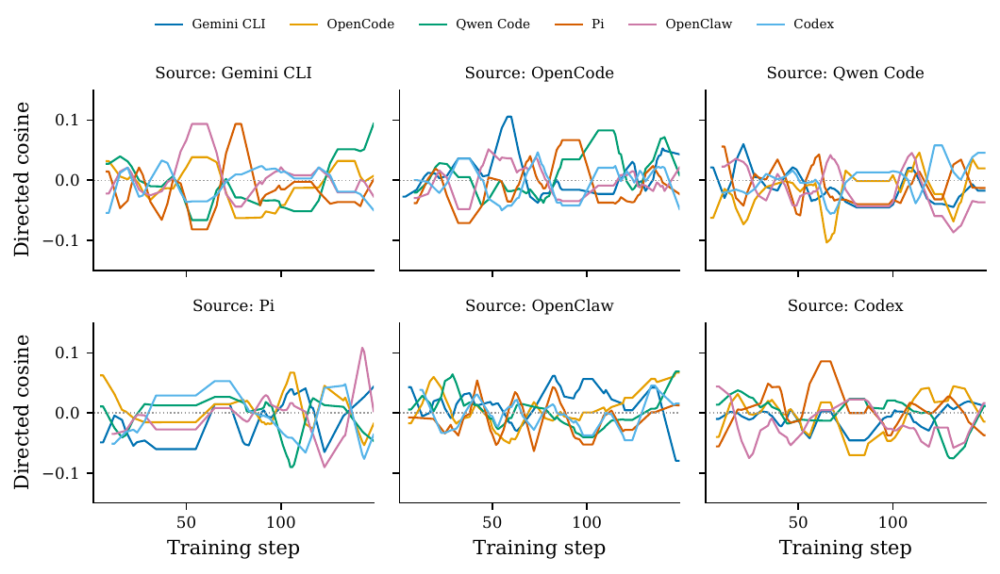

Un ordonnanceur bandit choisit quel harness génère le prochain batch on-policy GRPO, à partir de deux signaux gratuits lus dans le trainer : la learnability (|advantage| moyen du batch) et la transferability (cosinus entre un sketch du gradient du harness courant et les EMA des sketches des autres harnesses).
Claim principal : sous budget GRPO apparié (Qwen3.5-2B, 150 steps, 4 GPU, mêmes 12 000 lignes de prompts), HarnessBandit bat les deux mélanges statiques de harnesses sur PinchBench (0.506 vs 0.493 et 0.331) et sur les trois métriques ClawEval (26.7 % Pass³, 41.6 % pass@3, 0.556 de score moyen), sans s'effondrer sur un seul bras [Abstract ; §1 ; Tab. 1].
⚠️ Le claim qui compte pour nous n'est pas celui-là : le papier ne compare jamais son bandit à un ordonnancement aléatoire uniforme de batches purs. Voir §7.0 et §7 « contrôles ».
clawgym2025]. Chaque répertoire de tâche contient une requête utilisateur, des fichiers de workspace optionnels, et un checker reward.sh qui imprime un scalaire dans [0,1] [§3 ; §4.1]. Les auteurs ne construisent aucune tâche : le papier n'est pas un papier d'environnement.Qwen3.5-2B non tuné [§4.1].C'est le cœur conceptuel du papier, pris comme donnée d'entrée plutôt que construit.
polar2026] ; trainer slime/Megatron. L'éval PinchBench tourne dans le Docker officiel OpenClaw [§4.2]. Déterminisme, reset, timeouts : non précisés.tool_calls émis sont parsés et exécutés, ni ce que devient un épisode sans verdict (retiré du groupe ou scoré 0 ?). Le filtre zero-std les scorerait implicitement 0 et, s'ils sont tous 0, supprimerait le groupe entier — comportement jamais explicité.reward.sh qui imprime un scalaire dans [0,1] après la fin de la session [§3 ; §4.1]. Pas de juge LLM, pas de reward model, pas de rubrique.reward.sh, que le papier ne montre pas. On ne sait pas si c'est une somme pondérée, une conjonction, ou une clause d'échec.Le signal de learnability est le reward gap : L_h = moyenne de |A|, et A est un advantage leave-one-out sans normalisation par l'écart-type (Dr.GRPO) [§3 ; Eq. 4]. Donc L_h est, à une constante près, l'écart de reward intra-groupe.
Conséquence que le papier n'examine jamais : un vérifieur bruité produit mécaniquement un grand écart intra-groupe. Rien dans HarnessBandit ne distingue « ce harness est à la bonne difficulté » de « ce harness a un checker instable ». Avec α=0.5 [§4.4], un harness dont le checker est stochastique obtiendrait un L̃ élevé et serait sur-ordonnancé. Le papier : - ne rapporte aucune mesure de bruit du checker par harness ; - n'inclut aucun noise ceiling ; - ne fait aucune expérience d'injection de bruit.
Les auteurs ont le bon réflexe sur un point adjacent — Dr.GRPO sans division par σ, « pour éviter des updates explosifs quand la variance intra-groupe est proche de zéro » [§3] — mais c'est l'inverse du problème : ça protège le gradient, pas l'ordonnanceur. Pour un env juridique à juge LLM, ce mode de défaillance est le premier à tester.
liu2024drgrpo] — baseline leave-one-out de groupe, pas de division par l'écart-type du groupe [§3 ; Tab. 5]. Perte = surrogate clippé standard + pénalité KL vers une référence gelée [Eq. 1]. Les auteurs insistent : HarnessBandit est une couche d'ordonnancement au-dessus d'un trainer GRPO inchangé, « not a new policy objective » [§1 ; §4] ; n'importe quelle méthode on-policy fournissant des advantages par token et un gradient de batch convient [§3].| Item | Valeur |
|---|---|
| Modèle | Qwen3.5-2B |
| Adam LR | 1e-6, constant |
| KL coef. / type | 0.05 / low-var KL |
| Batch de rollout B | 8 |
| Échantillons par prompt G | 8 |
| Steps d'optimisation | 150 |
| Réponse max / prompt max | 8 192 / 40 000 tokens |
| Context parallel | 4 |
| GPU | 4 |
| Dynamic sampling | drop zero-std groups ; oversample batch 8 |
| Clipping ε du surrogate | non précisé (ε apparaît dans Eq. 1, valeur jamais donnée) |
| Température de sampling des rollouts | non précisée |
| Seeds | non précisé (une seule run rapportée) |
Le papier n'en mentionne aucun. Pas de section Limitations, pas de reward hacking, pas de comportement émergent. Est-ce crédible ?
reward.sh exécuté sur l'état final du workspace, c'est-à-dire la famille de vérifieurs la plus connue pour être contournable (écrire directement le fichier attendu, deviner le format de sortie). 150 steps sur un 2B rendent le hacking peu probable en pratique — mais l'absence de toute inspection de trajectoire fait que rien ne permettrait de le voir. Aucun exemple de trajectoire n'est montré.writing du mélange à 6 harnesses vaut exactement 0.000 [Tab. 6, App. B] — sur un n non nul. Les auteurs écrivent « we treat this as a recorded score rather than evidence that the mixture cannot write ». ⚠️ Un zéro exact sur une catégorie entière est la signature typique d'une panne d'infrastructure (appels d'outils non parsés, trajectoire vide, timeout du harness) plutôt que d'une performance. Les auteurs la signalent et ne l'instruisent pas. Comme cette cellule entre dans la moyenne globale du baseline le plus faible (0.331), elle contribue à l'écart « +17.6 points » affiché en intro.Aucune correction n'est donc évaluée, puisqu'aucun failure mode n'est traité.
| Chiffre annoncé | Où il est annoncé | Source dans le papier | Verdict |
|---|---|---|---|
| « HarnessBandit improves over mixed-batch multi-harness training on both benchmarks » | Abstract | Tab. 1 : PinchBench 0.506 vs 0.331 (mix 6) et 0.493 (mix 2) ; ClawEval 26.7/41.6/0.556 vs 21.7/38.5/0.510 et 19.9/29.8/0.490 | confirmé (mais marge de 1.3 pt seulement vs le mélange à 2 harnesses sur PinchBench, 1 run/tâche) |
| PinchBench 0.506 vs 0.493 (OC+Codex) vs 0.331 (6 harnesses), base 0.330 | §1 | Tab. 1 ; reproduit ligne « overall » de Tab. 6 | confirmé |
| ClawEval 41.6 % pass@3 et score moyen 0.556, vs 38.5 %/0.510 et 29.8 %/0.490 | §1 | Tab. 1 : 67/161 = 41.6 %, 62/161 = 38.5 %, 48/161 = 29.8 % | confirmé (arithmétique vérifiée) |
| « Pass³ is 26.7 %, matching the base model and above both mixtures » | §1 | Tab. 1 : HB et base à 43/161 ; mix 6 à 35/161, mix 2 à 32/161 | confirmé |
| « +1.3 point edge » sur PinchBench vs OC+Codex | §4.3 | 0.506 − 0.493 = 0.013 | confirmé |
| « a +17.6 point gap over both the six-harness mixture (0.331) and the untuned base model (0.330) » | §4.3 | 0.506 − 0.330 = 17.6 pts ; 0.506 − 0.331 = 17.5 pts | sur-généralisé : le 17.6 ne vaut que contre la base. Écart mineur, mais le mot « both » est faux au centième près |
| « learnability and transferability provide distinct, evolving signals » | Abstract | §4.4 : Pi (L̃=0.75, T̃=0.49), OpenCode (0.62, 0.60), OpenClaw (0.55 vs 0.59), Qwen Code (0.53 vs 0.37) | sur-généralisé : établi sur 4 harnesses sur 6 — les moyennes de Gemini CLI et Codex ne sont données nulle part. Aucun test quantitatif (pas de corrélation de rang) |
| « without collapsing to a single arm » | §1, contribution 3 | App. E : p final ∈ [0.127, 0.204] ; visites ∈ [21, 32] ; uniforme = 0.167 / ~25 | confirmé |
| « Final visit counts range from 21 to 32 » / « 148 observations after warmup » | §4.4 ; App. E | Somme des visites App. E : 32+26+24+24+21+21 = 148, pour un run de 150 steps ; et le warmup fait 30 des 150 steps, donc il ne reste que 120 steps post-warmup | contredit : 148 ≠ 150 (2 steps manquants, non expliqués — compatibles avec des steps sautés par le dynamic sampling, mais le papier ne le dit pas) et « after warmup » est incompatible avec 120 steps post-warmup |
| « constant-factor add-on to an existing GRPO run » | §4.6 | Argument de complexité uniquement | introuvable : aucun temps mesuré avec/sans sketch |
| 2 000 tâches × 6 harnesses = 12 000 lignes | Abstract, §1, §4.1 | 2 000 × 6 = 12 000 | confirmé |
| PinchBench : « HarnessBandit is highest on analysis, integrations, log analysis, productivity, research, skills, writing » | §4.3 et App. B | Tab. 6 : les 7 catégories vérifiées une à une ; mix 2 meilleur sur coding, csv_analysis, meeting_analysis, memory ; mix 6 ne gagne aucune catégorie | confirmé |
| Méthode | PinchBench (147 tâches, 1 run) | ClawEval Pass³ | ClawEval pass@3 | ClawEval score moyen |
|---|---|---|---|---|
| Qwen3.5-2B (base, non tuné) | 0.330 | 43/161 (26.7 %) | 58/161 (36.0 %) | 0.534 |
| Mixed (OpenClaw + Codex) | 0.493 | 32/161 (19.9 %) | 48/161 (29.8 %) | 0.490 |
| Mixed (6 harnesses) | 0.331 | 35/161 (21.7 %) | 62/161 (38.5 %) | 0.510 |
| HarnessBandit | 0.506 | 43/161 (26.7 %) | 67/161 (41.6 %) | 0.556 |
[Tab. 1]
Le papier sépare correctement les deux axes [§3 ; §4.2] : PinchBench = tâches held-out mais interface in-distribution (OpenClaw fait partie des 6 harnesses d'entraînement) ; ClawEval = tâches held-out et interface OOD (boucle think–act–observe native + schémas d'outils propres, aucun membre de H_train).
Lecture critique : - Sur l'interface in-distribution (PinchBench), presque tout le gain d'entraînement vient du fait de s'entraîner sur la bonne interface : le mélange à 2 harnesses OpenClaw+Codex atteint 0.493 contre 0.506 pour le bandit — les auteurs l'écrivent eux-mêmes : « restricting the mixed loader to OpenClaw and Codex accounts for nearly all of the trained-policy gain on this suite » [§4.3]. Le bandit n'apporte que +1.3 pt, sur 1 run par tâche. - Sur l'interface OOD (ClawEval), le résultat réel est que le RL ne gagne presque rien : HarnessBandit égale la base sur le critère officiel strict (Pass³, 26.7 %) et la dépasse de +5.6 pts sur pass@3 et +0.022 sur le score moyen. Les deux mélanges statiques dégradent la base sur Pass³ et sur le score moyen. Autrement dit, la contribution honnête du papier est : l'ordonnancement adaptatif évite la régression OOD que l'entraînement multi-harness naïf provoque — et non il améliore la robustesse. - ⚠️ La régression du mélange à 2 harnesses sur ClawEval (0.490 < 0.534 de la base) est la preuve la plus nette du phénomène « le comportement appris colle à son harness » : il est le meilleur sur coding/csv/memory in-distribution et le pire partout OOD.
Mesuré, oui, et c'est la qualité du protocole : un benchmark entier dont l'interface est hors de H_train [§4.2]. C'est exactement « entraîner sur A aide-t-il sur B » au niveau harness. Ce qui manque : aucun leave-one-harness-out (entraîner sur 5, évaluer sur le 6ᵉ), qui aurait donné 6 points de mesure au lieu d'un.
Aucune. Il n'y a pas une seule ablation dans le papier. Précisément, manquent : - α = 0 (transferability seule) et α = 1 (learnability seule) — alors que c'est la contribution revendiquée (« joint ») ; - ε = 0, c = 0 ; - dimension du sketch, K (nombre de couches), normalisation poolée vs par bras ; - et surtout le contrôle ci-dessous.
| Contrôle | Présent ? |
|---|---|
| Budget apparié (modèle, compute, steps, rollouts) | oui — « All trained methods share the optimizer, data product, step budget, and hardware » [§4.1] ; Tab. 5 |
| Ordonnancement aléatoire de batches purs, à budget égal | ABSENT — contrôle décisif manquant (voir ci-dessous) |
| Sous-ensemble/mélange aléatoire de même taille | partiellement : les mélanges statiques, mais batches mixtes, pas purs |
| Seeds multiples / IC | absent — une seule run d'entraînement ; PinchBench 1 run/tâche ; ClawEval N=3 trials d'éval, pas d'entraînement |
| FP/FN du vérifieur séparés | absent (vérifieur jamais évalué) |
| Noise ceiling sur le signal de learnability | absent |
| Vérifieur attaqué | absent |
| Appels d'outils parsés/exécutés, épisodes sans verdict | non précisé (cf. la cellule writing = 0.000) |
| Compaction / ratio d'importance | non précisé |
Le contrôle manquant, en détail. HarnessBandit diffère des baselines par deux choses simultanément : (i) les batches sont purs (un seul harness par step) au lieu d'être mélangés, (ii) le choix du harness est adaptatif au lieu d'être uniforme. Les deux baselines « Mixed » ne varient que (i)+(ii) ensemble. Le contrôle qui isolerait la contribution revendiquée — batches purs, bras tiré uniformément au hasard, même 150 steps — n'existe pas dans le papier. Et il était à portée de main : les 30 premiers steps sont exactement ce scheduler (round-robin pur) [§4.5], mais aucun run « round-robin jusqu'au bout » n'est rapporté. Tant que ce run manque, on ne peut pas savoir si le gain vient du bandit ou simplement de la pureté des batches — et la pureté a un effet plausible indépendant : elle supprime l'interférence de gradient intra-batch entre interfaces, ce qui est précisément le mécanisme que la section Related Work invoque [§2 « Multi-task learning and conflicting updates »].
Aucun. Un seul modèle (2B), un seul budget (150 steps), un seul nombre de harnesses pour la méthode (6). L'effet du nombre d'interfaces n'est testé que côté baseline (2 vs 6 mélangés), et il est négatif — le mélange à 6 est au niveau de la base.
reward.sh non montré.Plausible mais fragile — à répliquer avec le contrôle manquant. L'idée et son instrumentation sont bonnes et peu coûteuses ; la preuve empirique ne soutient pas le claim causal. Deux raisons, par ordre : (1) le bandit n'est jamais comparé à un ordonnanceur pur-aléatoire à budget égal, donc la contribution « bandit » n'est pas isolée de la contribution « batches purs » ; (2) une seule run, une marge de 1.3 point sur le benchmark principal, et zéro ablation sur α alors que « joint L–T » est le titre du papier. Le résultat le plus solide et le moins mis en avant est négatif et utile : le mélange statique multi-harness dégrade la performance OOD sous la base.

Ce qu'il faut voir : le schéma de la boucle. Une politique partagée voit les mêmes tâches à travers six harnesses ; un seul harness est actif par step d'optimisation. La learnability est l'écart de reward intra-groupe (un |A| moyen exploitable) ; la transferability est l'alignement de l'update courant avec les sketches des harnesses inactifs. Les deux scores sont fusionnés pour choisir l'interface suivante. Les auteurs précisent que « les glyphes sont schématiques » [légende Fig. 1] — rien de quantitatif ici.
Ce qu'il faut voir : le seul support du claim « les deux signaux sont distincts ». (a,b) moyennes mobiles à 31 steps des signaux normalisés ; (c) état moyen du scheduler par harness, aire du marqueur ∝ probabilité d'échantillonnage moyenne. Les valeurs citées dans le texte : Pi a la learnability la plus haute (0.75) mais une transferability moyenne (0.49) ; OpenCode est haut sur les deux (0.62, 0.60) ; OpenClaw a T (0.59) > L (0.55) ; Qwen Code a T (0.37) < L (0.53) [§4.4]. ⚠️ Les moyennes de Gemini CLI et Codex ne sont données dans aucun texte — à lire sur la figure si besoin, et aucun coefficient de corrélation n'est rapporté.
Ce qu'il faut voir : à gauche, la learnability L_h reste clairement positive ; à droite, la transferability T_h est un cosinus moyen qui fluctue dans une bande étroite autour de zéro [App. C]. C'est la figure la plus informative du papier pour nous : elle dit que le second signal est de faible amplitude et bruité, ce qui rend le choix α=0.5 (poids égal après min–max poolé) discutable — la normalisation min–max sur fenêtre de 32 amplifie mécaniquement un signal dont l'amplitude brute est petite. Aucune analyse de sensibilité à α n'est fournie.
Ce qu'il faut voir : à gauche les probabilités p_h, à droite les compteurs de visites ; la verticale marque la fin du warmup round-robin de 30 steps. Après le warmup la masse est non uniforme mais ne s'effondre pas : p finaux OpenClaw 0.204, Pi 0.197, OpenCode 0.184, Gemini CLI 0.151, Codex 0.137, Qwen Code 0.127, contre 0.167 pour l'uniforme [App. E]. Visites 21–32 contre ~25 attendues. ⚠️ C'est une réallocation faible : avec un tilt de cet ordre, l'écart de performance attribué au bandit repose sur une différence de quelques visites par bras sur 150 steps.
Ce qu'il faut voir : chaque panneau fixe un harness source ; chaque courbe est le cosinus du sketch courant vers l'EMA d'un pair. Les traces passent par des intervalles positifs et négatifs et n'identifient aucun harness source aligné avec tous ses pairs à tout instant [App. D]. Deux lectures : (i) celle des auteurs — c'est pourquoi l'état de transferability évolue au lieu de se verrouiller sur une interface « utile » ; (ii) ⚠️ la mienne — des cosinus qui oscillent autour de zéro sont aussi ce qu'on obtiendrait d'un estimateur essentiellement bruité à d=65 536 sur 1e8 coordonnées, et le papier ne fournit aucun niveau de bruit de référence (par exemple le cosinus entre deux sketches du même harness à deux steps consécutifs) qui permettrait de trancher. C'est le contrôle le plus bon marché du papier, et il manque.| Ingrédient | Choix du papier | Équivalent juridique | Transfert | Ce qui manque |
|---|---|---|---|---|
| Source des tâches | 2 000 tâches ClawGym tierces, requête + workspace + reward.sh [§4.1] |
Dossiers juridiques : question + pièces + réponse de référence rédigée par un expert | non (rien de réutilisable : les tâches sont importées, pas construites) | Tout le pipeline de construction des tâches, que le papier ne traite pas |
| Axe d'ordonnancement = l'interface, pas la tâche | 6 harnesses × mêmes tâches, pools indépendants pour que harness ≠ difficulté [§4.1] | Mêmes dossiers vus à travers : chat Q&A, boucle outil de recherche (Westlaw/Lexis-like), rédaction avec contexte documentaire, revue de contrat | direct — la factorisation tâche × interface est exactement la situation de Harvey LAB vs Vals vs un agent de rédaction | Il faut définir et figer les harnesses juridiques ; aucun des six n'est spécifié dans le papier |
| Vérifieur | reward.sh programmatique, scalaire [0,1], outcome pur, fiabilité jamais mesurée [§3] |
Juge LLM sur rubrique, ou vérification de citations | non — et c'est le point de rupture | La learnability est l'écart de reward ; avec un juge bruité elle devient un détecteur de bruit (§3). Rien dans le papier ne protège contre ça |
| Transferability par sketch de gradient | Cosinus entre sous-échantillon fixe de 65 536 coordonnées des 4 derniers blocs et EMA des autres bras, embeddings et tête exclus [§4.3] | Diagnostic d'interférence entre interfaces juridiques, ou entre juridictions / domaines de droit | direct — c'est le seul ingrédient indépendant du vérifieur, et il coûte un all-reduce de 65 536 floats | Aucune validation : pas de niveau de bruit de référence, aucune ablation de d ni de K |
| Learnability = mean |A| | Calculée sur les advantages déjà disponibles, pondération égale par groupe pour ne pas favoriser les longues trajectoires [Eq. 4] | Même calcul, trivialement disponible | adaptable — la pondération égale par groupe compte doublement en droit, où les réponses sont longues | Robustesse au bruit du juge ; et interaction avec le filtre zero-std qui retire déjà les groupes plats |
| Harness / outils | 6 CLI agents, aucune signature d'outil donnée, horizon non précisé, compaction non précisée [§2] | Recherche, citation, rédaction, vérification | non | Tout le détail. Le papier traite le harness comme une boîte noire nommée |
| Algo | Dr.GRPO (LOO, pas de normalisation σ), KL 0.05, B=8, G=8, 150 steps [Tab. 5] | Identique | direct mais sans information : réglages standards à l'échelle 2B | Rien à l'échelle qui nous intéresse |
| Curriculum | Bandit sur les bras-interfaces, softmax τ=0.3 + bonus c/√(n+1) + plancher ε=0.15, warmup round-robin 30 steps [§4.5] | Même machinerie sur interfaces, ou sur domaines/juridictions | adaptable — recette complète et hyperparamètres donnés | Preuve : aucun contrôle aléatoire, aucune ablation d'α, ε ou c |
| Anti-hacking | aucun | Indispensable en droit (citations fabriquées, réponses creuses bien formatées) | non | Tout |
| Omission vs erreur | Non traité (reward scalaire agrégé) | En droit l'omission coûte plus cher que l'erreur | non | Le papier n'a aucune ventilation par sous-population critique |
Le signal de transferability par sketch de gradient — et pas le bandit. Raisons : 1. Il est indépendant du vérifieur : il se calcule à partir du gradient, pas du reward. Dans un domaine où le juge est bruité et où l'on ne fait confiance à aucun scalaire, c'est la seule mesure d'interférence entre sources qui ne passe pas par le reward. 2. Il est quasi gratuit et non intrusif : un gather de 65 536 coordonnées sur les 4 derniers blocs, un all-reduce, un store CPU de quelques Mo [§4.3 ; §4.6]. Aucun rollout supplémentaire, aucun appel de juge supplémentaire — c'est précisément la propriété demandée. 3. Il répond à une question qu'on se posera de toute façon chez GDM, même si on n'adopte jamais le bandit : est-ce que l'entraînement sur l'interface « recherche » pousse la politique dans la même direction que l'interface « rédaction », ou contre elle ? La Fig. 5 suggère que la réponse réelle est « ni l'un ni l'autre de façon stable » — ce qui est déjà une information de conception.
Ce que je ne transposerais pas tel quel : α=0.5. Vu Fig. 3 (T brut dans une bande étroite autour de zéro, L nettement positif), poids égal après min–max poolé revient à amplifier arbitrairement le signal le plus faible, et le papier ne fournit aucune ablation pour justifier ce choix.
Deux runs, à enchaîner.
(1) Isoler le bandit de la pureté — le contrôle que le papier n'a pas fait. Trois harnesses juridiques sur le même jeu de dossiers (chat, boucle recherche-outil, rédaction). Quatre bras à budget strictement apparié (même modèle, mêmes steps, mêmes rollouts, même nombre d'appels de juge) : (a) batches mixtes, (b) batches purs, harness tiré uniformément, (c) HarnessBandit, (d) base non tunée. Éval sur un 4ᵉ harness jamais vu. - Résultat attendu si le papier tient : (c) > (b) > (a), et (a) ≤ (d) sur le harness OOD (c'est le résultat le plus solide du papier : le mélange statique dégrade sous la base). - Résultat qui falsifie : (b) ≈ (c). Alors tout le gain vient de la pureté des batches, pas de l'ordonnancement adaptatif, et on garde la pureté en jetant le bandit — ce qui serait d'ailleurs la bonne nouvelle, parce que la pureté est gratuite et sans hyperparamètre.
(2) Le bruit du juge — la question que le corpus impose. Même setup en (c), mais reward par juge LLM sur rubrique, avec un harness délibérément doté d'un juge plus bruité (par exemple en dégradant la température du juge ou en retirant une partie de la rubrique), à qualité réelle égale sur les trois harnesses. - Résultat attendu si la learnability est un signal valide : p_h ne se déplace pas vers le harness au juge bruité. - Résultat qui falsifie : p_h monte sur le harness bruité. Alors L_h = mean |A| est un détecteur de bruit de juge et non de difficulté, et il faut le remplacer par une version débruitée (par exemple |A| corrigé d'une estimation de la variance de test-retest du juge, mesurée hors ligne) avant toute utilisation en droit. Coût : une mesure de reproductibilité du juge, qu'on doit faire de toute façon.
Mesure-t-on déjà, pendant le post-training de Gemini, les cosinus entre gradients des différentes sources de données (interfaces, domaines, juridictions) ? Le papier montre que c'est un add-on à facteur constant au niveau 2B (sketch de 65 536 coordonnées sur les 4 derniers blocs, EMA sur CPU) ; à l'échelle Gemini la question est de savoir si l'infra de training expose le gradient de batch avant la consommation par l'optimiseur [§4.3] et si la souscription d'un all-reduce supplémentaire est acceptable. Si oui, c'est un diagnostic d'interférence quasi gratuit — indépendamment de toute décision sur l'ordonnancement.